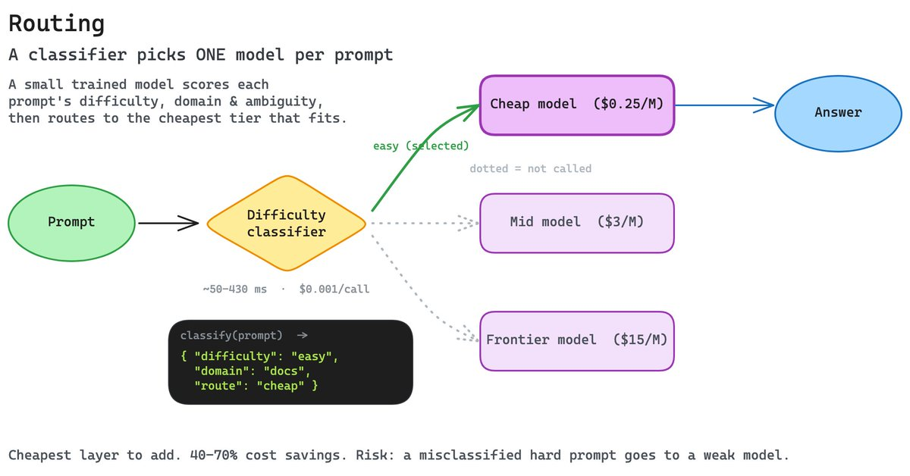
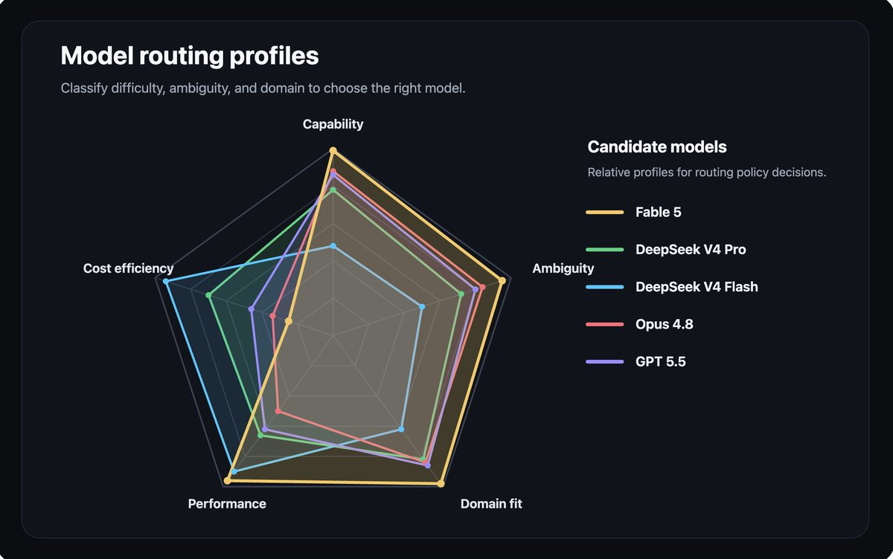
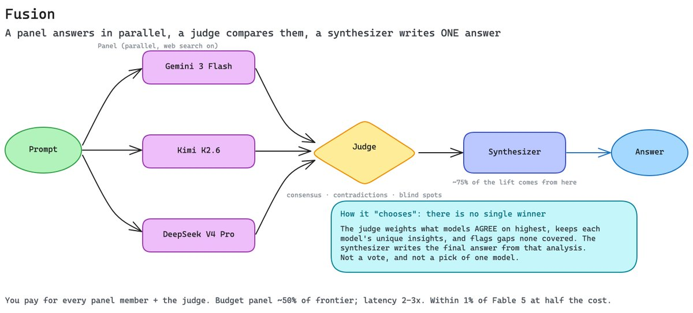
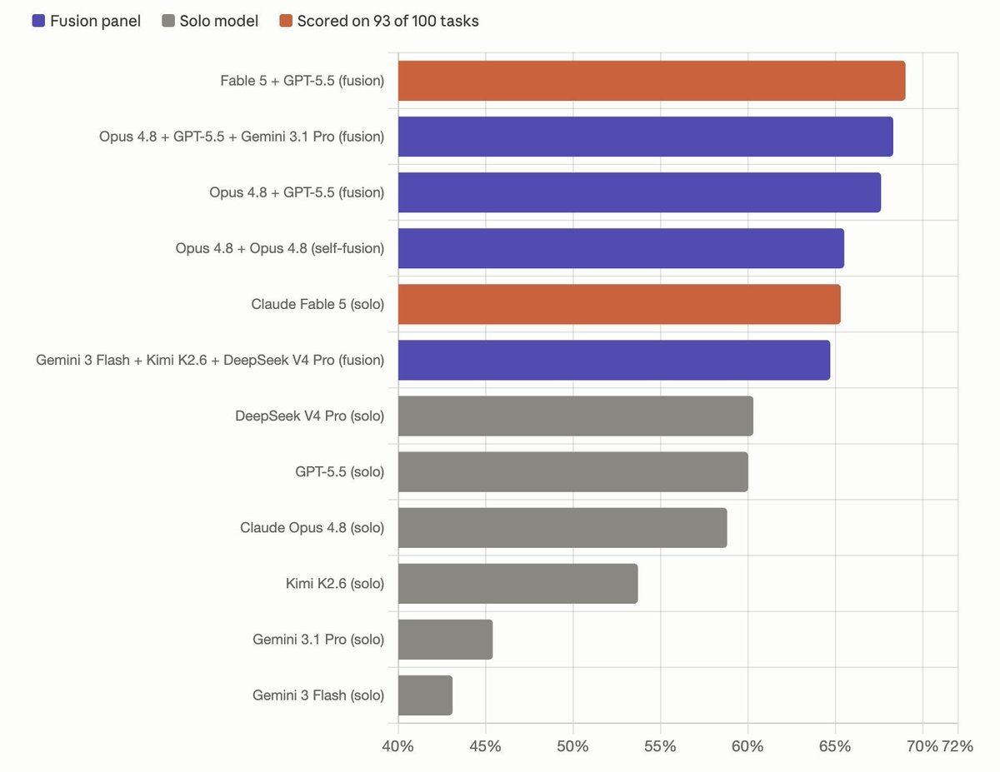
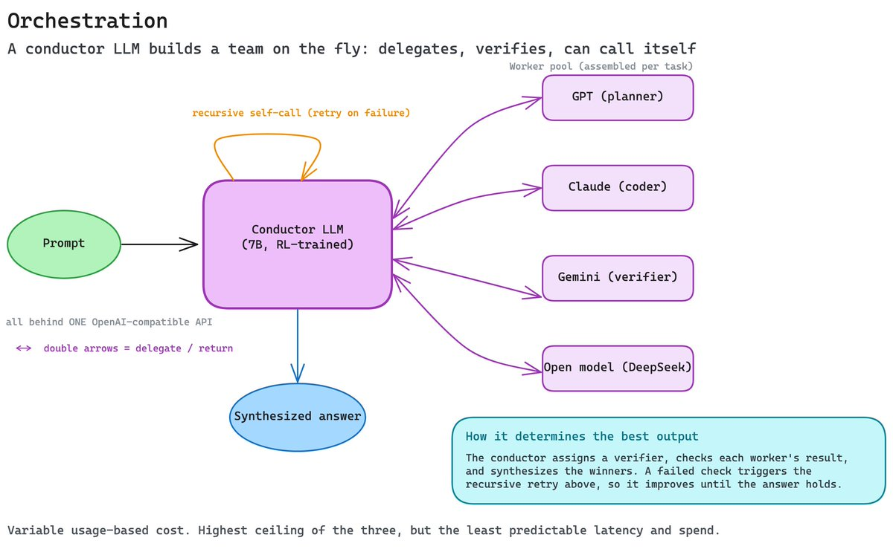
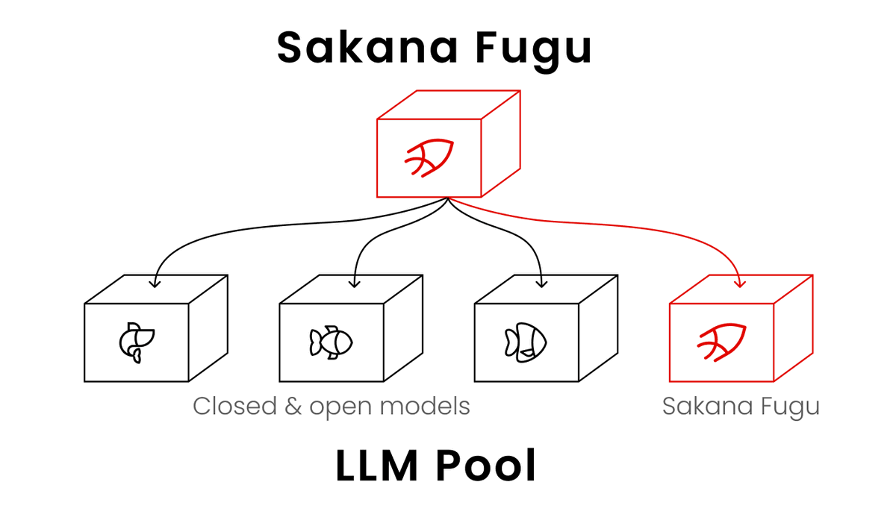

"If you're a model company, you may have a winner's curse." (Frontier models, he argued, are "one copy away from commoditization." The value accrues to the orchestration and scaffolding layer, not the model.)
— Satya Nadella, CEO of Microsoft (2026)
tl;dr
For three years the race was simple: build one model that beats every benchmark. Bigger training runs, longer context, higher scores. The winner would own the market because the model was the moat.
That race is quietly ending. Not because models stopped improving, but because a new layer has learned to deliver frontier-level performance without a single frontier model doing the work alone.
Routing, fusion, and orchestration systems now combine existing models intelligently enough to match the best monolithic models, often at half the cost. In doing so they reduce the standalone value of both the giant general model and the narrow specialist, and open a new axis of progress built on coordination instead of scale.
the old paradigm
The old strategy came in two flavors. One was the monolithic general model: a single enormous system trained to be good at everything, from poetry to proofs. Think OpenAI's GPT, Anthropic's Claude, Google's Gemini, Moonshot's Kimi, Alibaba's Qwen. The other was the narrow specialist: a model or product tuned to dominate one domain. Think Harvey in law, Cursor's Composer in code, Sierra in customer service, Glean in enterprise search.
Both worked for a while. General models gave you one API and broad competence. Specialists gave you depth where it mattered. But both hit the same walls.
General models are expensive to run on every request, even trivial ones, and they carry blind spots no amount of scale fully erases. Specialists are brittle, strong in their lane and useless outside it, and maintaining a fleet of them is its own burden. Worst of all, each approach is a single point of failure: one vendor, one set of weights, one way of being wrong.
Takeaway: betting everything on one model, general or specialized, means inheriting all of its limits at once.
the new systems
The alternative is to stop treating the model as the product and start treating the combination as the product. Three approaches lead the way.
routing
Routing is a smart dispatcher that picks the best model for each prompt. Instead of sending everything to your most expensive model, a fast classifier judges difficulty first, then sends the request where it belongs.

Morph is the clearest example. Its router classifies prompt difficulty in milliseconds, then sends easy tasks to cheap models and hard tasks to frontier models, paying $0.25/M tokens for a typo fix instead of $15/M. The result: 40–70% cost reduction with under 2% quality loss on hard coding tasks.
Morph also ships specialized components like fast apply and context compaction, proof that the router itself becomes a place to add value.

Morph isn't alone. Not Diamond trains a learned meta-router across 60+ models and powers OpenRouter's Auto endpoint. Martian (backed by NEA and General Catalyst, used by 300+ companies) claims up to 98% cost reduction by predicting model quality before inference. And the open-source RouteLLM from LMSYS set the public baseline: 95% of GPT-4 quality at roughly a quarter of the cost. Every major gateway, including LiteLLM, Portkey, and OpenRouter, now ships routing built in.
Takeaway: routing makes "which model?" a per-prompt decision instead of a one-time bet.
Cost/tradeoff: the cheapest layer to add (roughly $0.001–0.005 per classification and ~50–430ms of latency) for 40–70% savings, but a misclassified hard prompt sent to a weak model is a real quality risk.
fusion
Fusion runs multiple models in parallel, then has a judge analyze their answers and a synthesizer produce one final response.

OpenRouter Fusion is the reference design. A prompt goes to several models at once, with tool access. A judge extracts consensus, flags contradictions, and surfaces blind spots. A synthesizer then writes the final answer from that analysis.

The numbers are the story. A budget panel of Gemini 3 Flash + Kimi K2.6 + DeepSeek V4 Pro came within 1% of Fable 5 while costing roughly half as much. And the gains aren't mostly from picking diverse models: OpenRouter even ran Opus 4.8 paired with itself, judged by Opus 4.8, and still jumped 6.7 points over solo Opus. About 75% of the lift comes from synthesis, only 25% from diversity. The meta-layer, not the model pool, is doing the heavy lifting.
The technique itself isn't new. It's Mixture-of-Agents (MoA), around since 2024. OpenRouter's move was productizing it behind a single API alias, so calling a five-model panel is as easy as calling one model.
Takeaway: fusion manufactures a frontier-quality answer out of cheaper parts, and most of the magic is in the synthesis.
Cost/tradeoff: you pay for every panel member plus the judge, so a budget panel lands near ~50% of a frontier model while a quality panel can run 2–3x its cost, and latency is 2–3x a single call. Worth it for high-stakes research, wasteful for simple prompts.
orchestration
Orchestration is the highest-level approach: a system, often an LLM itself, that manages a whole team of models dynamically.

Sakana AI's Fugu is exactly this. Fugu is an LLM that acts as a conductor, exposed through a single OpenAI-compatible API. Behind that one endpoint it routes, delegates, verifies, and synthesizes across a pool of models, including recursive calls to itself. The research behind it is striking: Sakana's Conductor is just a 7B model (fine-tuned from Qwen2.5 with reinforcement learning) that learned to manage a pool of frontier models like GPT, Claude, and Gemini in plain natural language, and beat every individual model in its pool. Letting it call itself as a worker creates recursive test-time scaling: it reads its own team's failed output and spins up a corrective workflow on the fly. Fugu Ultra matches Fable 5 and Mythos on hard benchmarks. It also adds a benefit no single model can: sovereignty, by routing around export controls and vendor restrictions.

Takeaway: orchestration hides an entire model team behind one API, and the conductor becomes the product.
Cost/tradeoff: cost is variable and usage-based (Fugu sells subscription and pay-as-you-go tiers), and a learned conductor uses fewer API calls than naive multi-agent baselines, but you trade unpredictable latency and spend for the highest ceiling of the three approaches.
how this weakens specialized intelligence
Put these together and the standalone specialist starts to look redundant.
Routers make dynamic selection trivial. You no longer need to commit to a specialist, because the system can reach for one only when a prompt calls for it. Fusion goes further and creates virtual specialists on demand: combine the right models for this question and you get specialist-grade depth without a dedicated specialist model.
The consequence is that value shifts to the meta-layer: the orchestrator, the judge, the router. That's where quality is now decided.
The nuance worth keeping: specialization doesn't die, it becomes modular. A great code model is still useful, but as a component the system calls, not as a standalone product users buy directly. The leading specialists already see it. Cursor lets you swap Composer for GPT-5.5, Opus, or Gemini per task, and Glean's Model Hub mixes models across the steps of a single agent. The product is the system around the model, not the model.
Takeaway: specialists become parts, not products.
how this pushes the frontier
This isn't only a cost story. Combining models pushes performance forward in ways a single model can't.
Better answers through diversity and synthesis. Independent models make independent mistakes; a judge and synthesizer can cancel errors and merge strengths, reaching quality no single member had.
High quality at lower cost. Fusion's budget panel matching Fable 5 at ~50% cost, and Morph's 40–70% savings, show the quality-to-price curve bending in the user's favor.
Greater resilience. Multi-vendor systems survive one model's outage, regression, or restriction, and as Fugu shows, can even route around geopolitical and licensing limits.
A new research focus. Progress now has a second axis: not just scale the model, but coordinate the models. Judges, routers, and conductors are becoming research targets in their own right.
Takeaway: coordination is a new frontier, and it compounds with model quality rather than competing with it.
implications and challenges
For builders, the lesson is to design at the system level: own the routing, judging, and synthesis logic, and treat models as swappable backends.
For labs, raw benchmark wins matter less if a cheaper panel can match them. The defensible position is being the indispensable component, or moving up into the orchestration layer yourself.
For platforms, the meta-layer is the new product surface, and the user relationship lives there.
It's not free, though. These systems add latency (multiple calls, then synthesis), introduce variability (more moving parts, more failure modes), and are overkill for simple tasks where one cheap model already suffices. The honest framing: fusion and orchestration are for the hard, high-value requests, not for every prompt.
Takeaway: the meta-layer wins on hard problems, but adds cost and complexity; you should only pay when it's worth it.
conclusion
The shift is this: for years the winner was whoever trained the single best model. Now a thin layer of routing, fusion, and orchestration can assemble frontier-level performance from cheaper, diverse, swappable parts, matching the best monolithic models at a fraction of the cost, while making both giant generalists and narrow specialists less valuable on their own.
The model is no longer the moat. The value has moved up a layer, to the system that knows how to combine the models, and that layer is only getting started.